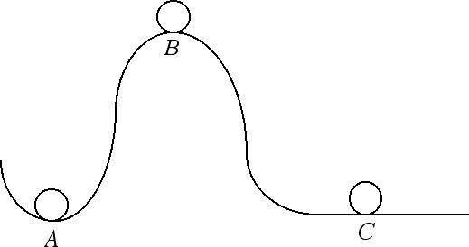
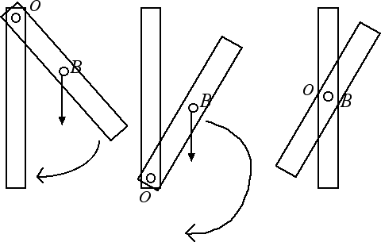

Equilibrio per rotazioni
Baricentro ed equilibrio
Esistono tre possibili posizioni di equilibrio di un corpo: equilibrio stabile, equilibrio instabile ed equilibrio indifferente. Vogliamo illustrarle partendo dall'esempio in figura:

La sfera A occupa una posizione di equilibrio stabile: se spostiamo la sfera dalla posizione di equilibrio, lei tende a tornare nella posizione di partenza. La sfera B occupa invece una posizione di equilibrio instabile: se la allontaniamo dalla posizione di equilibrio, la sfera si allontana sempre più dalla posizione di partenza. La sfera C invece occupa una posizione di equilibrio indifferente: se la allontaniamo dalla posizione di partenza lei si sposta per assumere una nuova posizione di equilibrio. Su un piano orizzontale ogni punto corrisponde a una posizione di equilibrio.
In alcune situazioni la posizione del baricentro (ossia il punto in cui possiamo pensare concentrata tutta la massa di un corpo) gioca un ruolo importante nella classificazione delle posizioni di equilibrio. Supponiamo di avere un'asta omogenea. La possiamo appendere ad un punto posto sopra il baricentro, ad un punto posto sotto il baricentro o ad un punto coincidente con il baricentro, come nella figura sottostante:

Nella figura di sinistra il baricentro sta al di sotto del punto di rotazione. La posizione verticale dell'asta è una posizione di equilibrio stabile: infatti se spostiamo l'asta dalla posizione verticale si genera un momento orario che tende a riportare l'asta nella sua posizione di partenza. Nella figura centrale invece il baricentro sta al di sopra del punto di rotazione. L'equilibrio è instabile: infatti se spostiamo l'asta dalla posizione di equilibrio il momento orario tende ad allontanare l'asta dalla posizione di partenza e a rovesciarla. Nella figura a destra invece il baricentro coincide con il punto attorno al quale avviene la rotazione. In questo caso l'equilibrio è indifferente e l'asta tende a rimanere nella nuova posizione in cui è stata portata. Infatti, poiché la retta d'azione della forza-peso passa per il centro di rotazione, abbiamo che il momento della forza-peso è nullo e non si genera alcuna rotazione.
Nella valutazione dell'equilibrio di un corpo assume la sua importanza anche la posizione relativa del baricentro e della superficie d'appoggio. Per avere equilibrio è fondamentale che la verticale passante per il baricentro di un corpo cada all'interno della superficie d'appoggio del corpo stesso. Se invece tale verticale interseca il perimetro della superficie d'appoggio allora l'equilibrio diventa instabile. Se infine la verticale per il baricentro cade fuori dalla superficie d'appoggio del corpo in esame allora la situazione non è più di equilibrio perchè si genera un momento in grado di far ruotare il corpo.